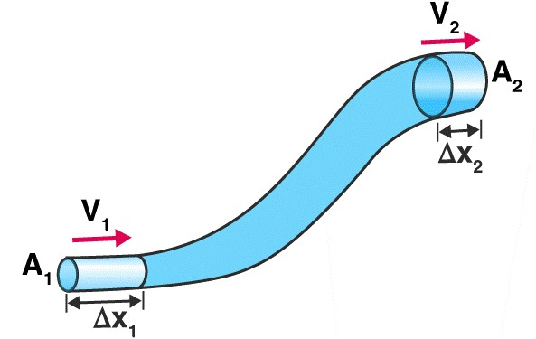
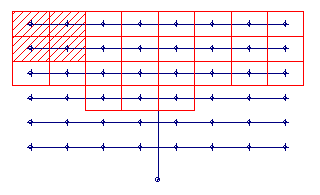
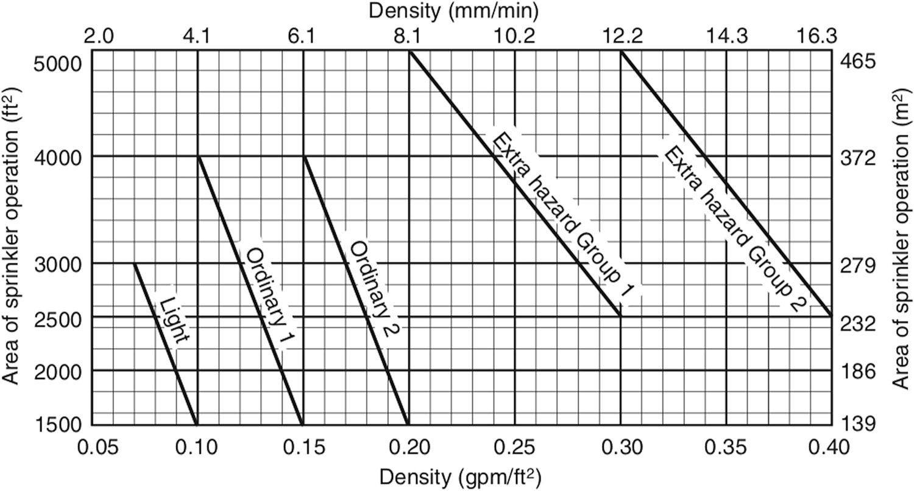

Introduction
In order to avoid fire incident, it results necessarily the implementation of fire protection mechanisms, which substantially reduce the intensity and probability of this kind of accidents. Fire events must be detected, controlled and extinguished in the early stages, while it is still manageable
There are two different kinds of fire protection systems:
- Passive systems: Mostly structural systems.
- Active systems: Mechanical, electrical and chemical systems.
The present documentation is focused on active mechanical systems, specifically those that are automatic: sprinkler and Water Spray Fixed
NFPA, API and PDVSA standards and other engineering criteria should be acknowledged and considered in order to design a successful fire protection system.
Basic Fire Concepts
Fire
It is a set of incandescent particles of a combustible material, which emit light and heat, produced by an oxidizing chemical reaction. There must exist a proper mixture of combustible material and oxygen, and enough temperature to ignite it.
- Class A: fires involving solid materials such as wood, paper or textiles.
- Class B: fires involving flammable liquids such as petrol, diesel or oils.
- Class C: fires involving gases.
- Class D: fires involving metals.
- Class E: fires involving live electrical apparatus.
BLEVE
A boiling liquid expanding vapor explosion is an explosion caused by the rupture of a vessel containing a pressurized liquid that has reached temperatures above its boiling point.[1] Because the boiling point of a liquid rises with pressure, the contents of the pressurized vessel can remain liquid so long as the vessel is intact. If the vessel's integrity is compromised, the loss of pressure and dropping boiling point can cause the liquid to rapidly convert to gas and expand extremely rapidly.
Boil over
It happens when the density and boiling point of a combustible liquid is inferior to that of the water. Therefore, the hazardous liquid will float over the water. The heat transferred will abruptly evaporate the water making an explosion.
Slopover
It happens when water meets ignited combustible. Water instantaniusly evaporate causing an explosion
Combustible material
Substances that when evaporate and mix with oxygen are able to maintain a combustion reaction.
Volatility
Tendency of a substance to evaporate.
Flash point
Temperature at which a flammable or combustible liquid might ignite.
Flammable liquids
Liquids with a flash point of less than 100 °F (37.8 °C) : Gasoline, solvents, acetone.
Combustible liquids
Liquids with a flash point of more than 100 °F (37.8 °C) : Diesel, alcohol.
Basic Extinguishing Concepts
As explained before, fire requires oxygen, combustible and heat. Therefore it is necessary to cancel one of these elements by one of these mechanisims:
- Heat removal by cooling: Reduce the temperature bellow the flash point. This will reduce or eliminate whatsoever the combustible vapor in the air
- Reduction or elimination of of oxygen by suffocation: Combustible material can be isolated from oxygen with foam or some gas that displace the air.
- Elimination of combustible material by removal or dilution.
- Break or inhibition of the fire chain reaction.
Water
On one hand it is the most known and used extinguishing agent, on the other hand is really cheap. When used in liquid state it cools down the combustible substance by two mechanisms; firstly, is that water boiling point is really low relative with the temperature of flames. Secondly, is that when water is heated it passes from liquid to gas phase, such transformation takes part of the heat with it cooling down the fire. For this last reason is that most fire protection systems distribute water in form of little drops which evaporate easily.
If the combustible material is water soluble its molecule bonds will break and the combustion will no longer exist.
When used in gas phase it will suffocate the fire, displacing the oxygen from the combustion reaction.
disadvantage of the use of water for extinguishing is that it conducts electricity and most combustible and flammable liquids tend to float over water.
Hydraulic Fundamentals
Volumetric Flow Rate
It is the volume of fluid which passes per unit time
$$Q={Aυ}$$ $$Q={V \over t}$$
Q = A * υ
Q = V / t
Where:
- Q is flow
- A is area
- υ is velocity
- V is volume
- t is time
Pressure
Pressure is the force applied perpendicular to the surface of an object per unit area over which that force is distributed. Gauge pressure is the pressure relative to the ambient pressure
$$P={F \over A}$$
P = F / A
Where:
- P is pressure
- F is force
- A is area
Static Pressure
It is the pressure that the fluid applies on all directions inside a pipe, axial and radial (Over walls of pipe). If there is a hole on the wall of the pipe, just as the case of a sprinkler, this pressure energy will transform into velocity energy, so that explosive effect of sprinklers can take place.
Velocity Pressure
This pressure acts axially, in the direction of the flow. It is caused for the movement of the flux
Total Pressure
The sum of both pressures.
Hydraulic losses
Energy dissipation due to friction of water on pipe walls, heat, vibration and change of direction of the flow. The most important and considered in calculations are the losses for friction and the losses for pipe fittings and accessories
$$p= 4.52 { Q^{1.85} L \over C^{1.85} d^{4.87}}$$
p = 4.52 * (( Q^(1.85) * L ) / ( C^(1.85) * d(4.87 ))
where:
- p is the lost for friction
- Q is the flow rate
- L is the length of the pipe
- d is the inside diameter of the pipe
- C is the Hazen-Williams constant.
Losses for pipe fittings
They happen due to the change of diameters and direction of the flow inside of piping systems. NFPA 13 and 15 indicate that this losses can be estimated by the equivalent length method, which converts this losses in friction losses through the pipe length.
The equation of continuity
The flow inside of a pipeline must be constant, independently of the sectional diameter. The amount of liquid that enters must be the same that goes out.
 $$A1V1=A2V2$$ $$Q1=Q2$$
A_1*V_1=A_2*V_2
Q_1=Q_2
Where:
- A1 and A2 are respectively the initial and final transversal areas.
- V1 and V2 are respectively the initial and final velocities.
- Q1 and Q2 are respectively the initial and final flow rates.
Bernoulli Equation
Bernoulli theorem states that within a line of flux the energy must be constant.
$${V_A^{2} \over 2g} + {P_A \over W} + Z_A = {V_B^{2} \over 2g} + {P_B \over W} + Z_B + h_{AB}$$
〖V_A〗^2/(2.g)+P_A/W+Z_A=〖V_B〗^2/(2.g)+P_B/W+Z_B+h_AB
Where:
- VA and VB are respectively the initial and final velocities.
- g is the gravitational acceleration.
- PA and PB are respectively the initial and final pressures.
- W is the water specif weight.
- ZA and ZB are respectively the initial and final levels.
K Factor
When the flux flows through a hole in a pipe wall, the potential energy of its pressure becomes kinetic energy outside of the pipe, because the pressure inside the pipeline is bigger than that of the atmosphere. Therefore, it can be stablished that the flow rate of the liquid that flows through the hole is directly proportional to the pressure it has. This phenomenon explains the behaviour of sprinklers, and is used in its hydraulic calculation.
$$ Q = K \sqrt{P} $$
Q=K*sqr(P)
Where:
- Q is the flow rate
- P is pressure
- K is the discharge coefficient
When the flux is divided by a TEE fitting, pressure and flow rate must be balanced through:
$$ {Q_1 \over Q_2} = \sqrt{P_1 \over P_2} $$
Q1/Q2=sqr(p1/p2)
Where:
- Q1 and Q2 are respectively the initial and final flow rates.
- P1 and P2 are respectively the initial and final pressures.
Designing Fundamentals
Fire Scenario
PDVSA IR-M-03 indicates that all fire protection systems depending on water as extinguishing agent are based on the principle that only one major fire scenario may occur at a determine time within an installation. Therefore, it is mandatory to determine which of the possible scenarios requires more pressure or flow rate, and design the systems with these necessities.
Area of sprinkler operation
It is the area where the designer assumes it may occur a fire scenario. It is part of the designing process to estimate which area is hydraulically unfavorable
It must be assumed that only the sprinklers contained within this area activate during a fire scenario. This way, the flow rate and pressure required by the system on the current fire scenario can be calculated.
Application Density
It is the flow rate per unit area discharged by a fire protection system. It is one of the most important parameters for a sprinkler or deluxed system calculation. It is needed in order to calculate the water flow rate required.
NFPA 13 stablishes for sprinkler systems that minimum densities depend on the type of hazard and the area of sprinkler operation:
NFPA 15 stablishes that the minimum density depends on the purpose of the design; whether it is extinction, control or cooling, and the nature of the equipment to be protected by the system
Hardy Cross Method
The Hardy Cross method is an iterative method for determining the flow in pipe network systems where the inputs and outputs are known, but the flow inside the network is unknown.